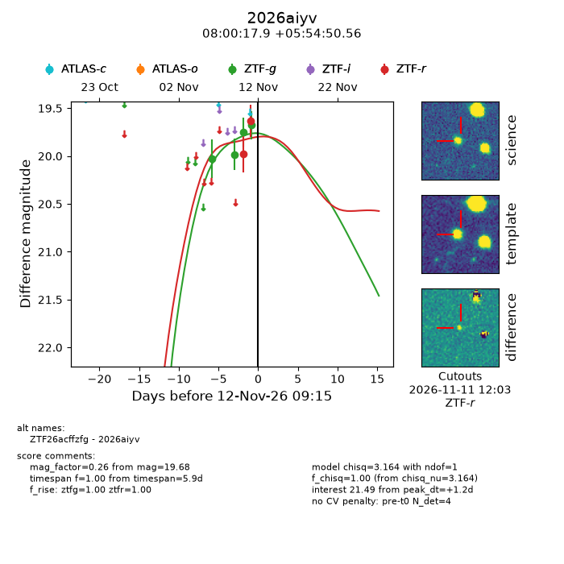
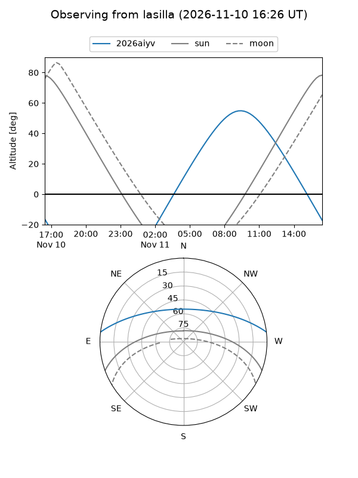
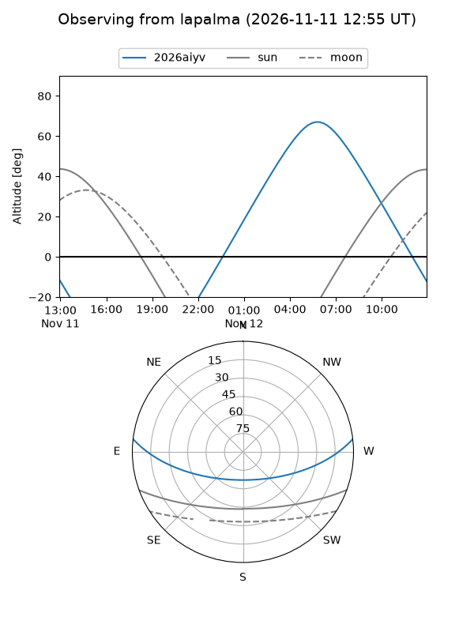
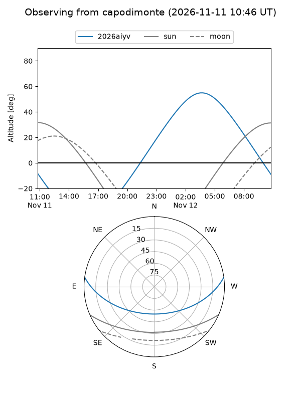
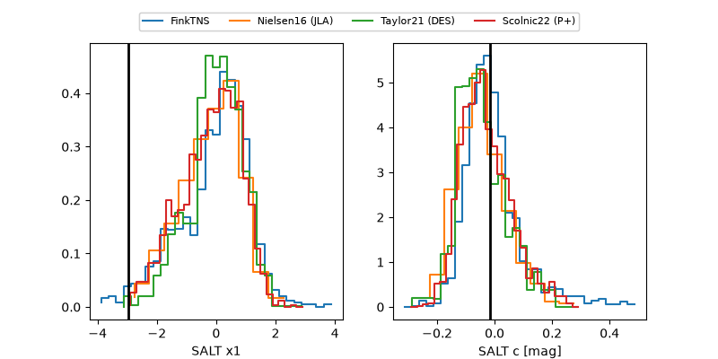

2026aiyv
Target 2026aiyv at 2026-11-12 09:20
Aliases and brokers:
FINK-ZTF: ztf.fink-portal.org/ZTF26acffzfg
Lasair-ZTF: lasair-ztf.lsst.ac.uk/objects/ZTF26acffzfg
ALeRCE-ZTF: alerce.online/object/ZTF26acffzfg
YSE-PZ: ziggy.ucolick.org/yse/transient_detail/2026aiyv
TNS name: wis-tns.org/object/2026aiyv
Direct TNS query: direct search
alt names
ZTF26acffzfg (ztf,fink_ztf)
2026aiyv (tns,yse)
Coordinates:
equatorial (ra, dec) = 120.0745,+5.91405
equatorial (HMS+DMS) = 08:00:17.88,+05:54:50.56
galactic (l, b) = (215.4951,+17.99781)
Flags:
peak dt: +1.2
Photometry:
last ztfg=19.68, ztfr=19.63
4 ztfg, 2 ztfr detections
Lightcurve

Visibility



Additional plots
